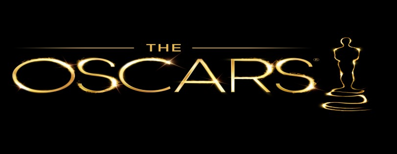

Óscares 2022 | Vencedores
Conhece os vencedores das principais categorias dos Óscares 2022.- MELHOR FILME • “Coda: No Ritmo do Coração” – Vencedor
- MELHOR REALIZADOR • Jane Campion, “O Poder do Cão”
- MELHOR ATOR • Will Smith, “King Richard: Para além do Jogo”
- MELHOR ATRIZ • Jessica Chastain, “Os Olhos de Tammy Faye”
- MELHOR ATOR SECUNDÁRIO • Troy Kotsur, “Coda: No Ritmo do Coração”
- MELHOR ATRIZ SECUNDÁRIA • Ariana DeBose, “West Side Story”
- MELHOR ARGUMENTO ORIGINAL • Kenneth Branagh, “Belfast”
- MELHOR ARGUMENTO ADAPTADO • Siân Heder, “Coda: No Ritmo do Coração”
- MELHOR FOTOGRAFIA • Greig Fraser, “Duna”
- MELHOR TRILHA SONORA • Hans Zimmer, por Duna
- MELHOR CANÇÃO ORIGINAL • “No Time to Die” (007 – Sem Tempo Para Morrer)
- MELHOR EDIÇÃO • Joe Walker, por Duna
- MELHOR FIGURINO • Jenny Beavan, por Cruella
- MELHOR FILME INTERNACIONAL • Drive My Car (Japão)
- MELHOR ANIMAÇÃO EM LONGA METRAGEM • Encanto
- MELHOR SOM E MELHORES EFEITOS VISUAIS • Duna
- Domingo: 17:30